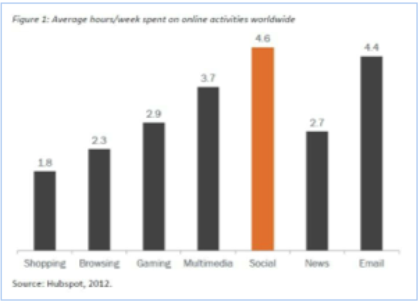

Technology and Marketing
A very vital part of marketing is technology. This day and age almost everyone has a smart phone in their pocket with at least one source of social media. Apps such as Twitter, Facebook, blogs, and Instagram are all ways marketers use technology to communicate with the public. Social media is an Internet based application that allows individuals to create, collaborate, and share with one another. This type of marketing and strategies are, “profoundly transforming the way customers use the web” (Walid). Professor Dale Wilson of the Broad College of Business states that “technology for marketing is very important, its changing everyday and it’s how we communicate with the customer”. This strategy is called “Social Marketing” and gets the word out to the consumer the most efficient way possible. The figure below shows the average hours per week people spend on social applications.
Clearly most of the population is spending their time on social sites and marketers are beginning to take full advantage of that. They know that the public is scrolling their fingers on the screen of their phone reading, liking, and sharing what they see; marketers make sure they get their message out there for the public to see. Most stores and services have many accounts that allow their customers to follow them. This lets the customer access special news on sales, special offers, and store updates.
Another way marketers use technology is with different software. One type of software being used is called Big Data, which is the fundamental value of the new marketing landscape, created from the digital world we now live in. This process is also called “data mining”, a program that allows marketers to dig through “huge data basis, and use that to send customers rewards and incentives” (Wilson). This software is extremely helpful for companies and builds a bond with the customer. Sending out rewards and help create customer engagement, loyalty, and also help optimize marketing performances. It seems like each day there is something new in the world of technology, and that’s where research marketers come in to investigate it and help keep the company up to date to have their name out there for the world to see.